Creación de un Cohete
Ahora que tenemos los conocimientos
básicos sobre gráficos en Inkscape, vamos a ponerlos en práctica
diseñado un gráfico. Para esto vamos a crear un cohete usando un
excelente tutorial escribo por Nicu Buculei, quien muy generosamente lo
ha hecho disponible bajo la licencia CC-BY-SA desde su página web: http://howto.nicubunu.ro/rocket-inkscape/.
El objetivo es producir una imagen como la siguiente, no
completamente realistica, pero lo suficientemente reconocible como un
cohete y, lo más importante, divertida (eso esperamos) y fácil de ser
creada por alguien que esté usando Inkscape por primera vez.

Para empezar, abre el
programa de Inkscape y dibuja un rectángulo, que sea más alto que ancho
(es nuestro futuro cohete!) y que tenga esquinas rectas y no curveadas.
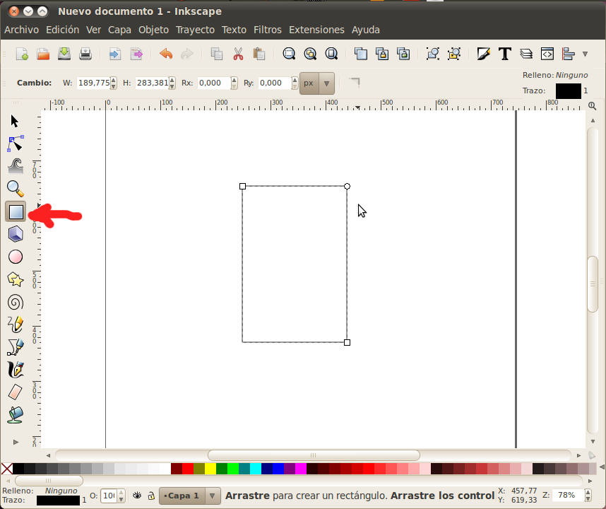
Luego selecciona el rectángulo y conviértelo a un trayecto
seleccionado la opción en el menú "Trayecto". Eso nos permitirá
usar el editor de nodos luego.
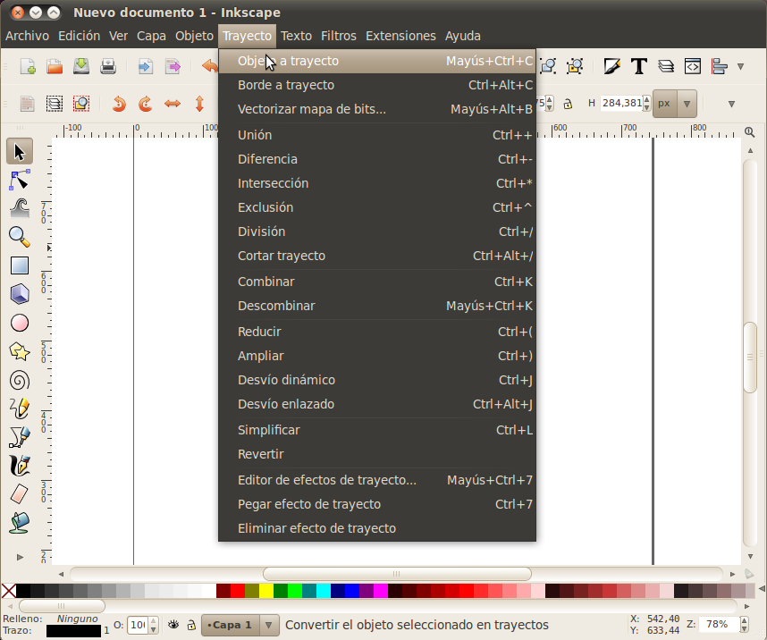
Ahora ve al editor de nodos entre las opciones a la izquierda, y
selecciona los dos nodos superiores. La siguiente operación se
puede hacer solamente usando el teclado: presiona Ctrl+Alt+> para
agrandar el segmento. El resultado debe ser un trapecio con el
lado ancho en la parte de arriba.

Con los mismos dos nodos superiores seleccionados, añade un nodo nuevo entre medio de ellos.

Selecciona el nuevo nodo (sólo ese nodo) y muevelo hacia arriba
(mantén la tecla de Ctrl presionada mientras mueves el nodo para
limitar el movimiento a la dirección vertical solamente).

Vuelve a seleccionar los dos nodos que eran las esquinas superiores
del rectángulo, y hazlos simétricos, de modo que comenemos a hacer una
forma que parezca a una bala o un cohete.

Parra finalizar la forma de bala del cuerpo del cohete necesitamos
redondear la parte inferior: selecciona las dos esquinas inferiores,
añade un nuevo nodo entre ellas, selecciona el nodo nuevo, muévelo sólo
un poco hacia arriba y hazlo simétrico de la misma forma que hicimos en
la parte superior. Ahora tenemos una forma más aerodinámica, más
como una bala.

Un cohete necesita sus "alas", así que vamos a crear otro rectángulo, esta vez mucho más pequeño.

Selecciona el rectángulo y haz clic dentro de él una vez.
Esto activará la función de rotación/ajuste de ángulos. Necesitamos
ajustar uno de los ángulos moviendo la flecha al lado de uno de los
lados.

Ahora mueve el rectángulo a la posición apropiada, justo al lado del cuerpo del cohete.

Nuevamente, haz clic dentro del rectángulo y usa la función de
rotación para arrastrar una de las esquinas hasta que el rectángulo se
alínie con el cohete. No te preocupes si la alineación no es
perfecta: baja el rectángulo debajo del cuerpo del cohete (usando la
opcion de "bajar la selección un nivel"), y una vez rellenemos el área
con color, no se notará este detalle de alineación.
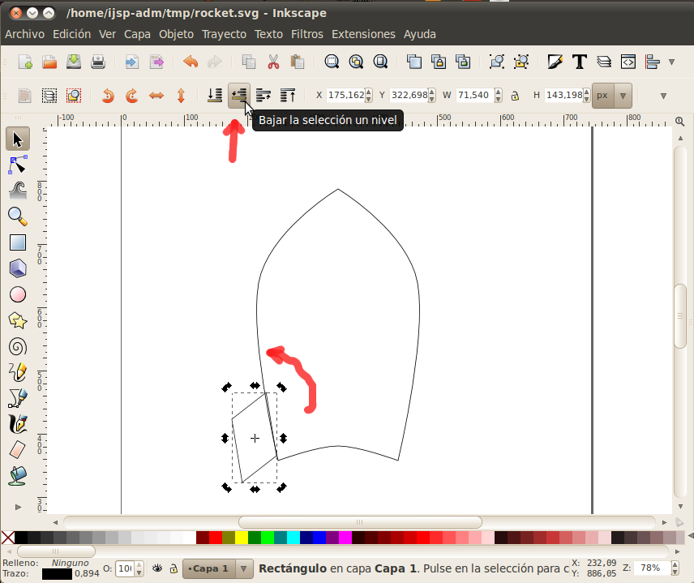
Ahora selecciona el ala y duplícala desde el menú de "Edición"
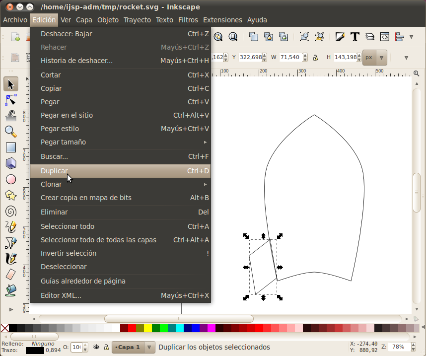
Voltea la nueva ala (duplicada) horizontalmente usando el comando
indicado, y muévela hasta el otro lado del cohete (mantén la tecla de
Ctrl presionada mientras mueves el ala para que el movimiento se limite
al plano horizontal).
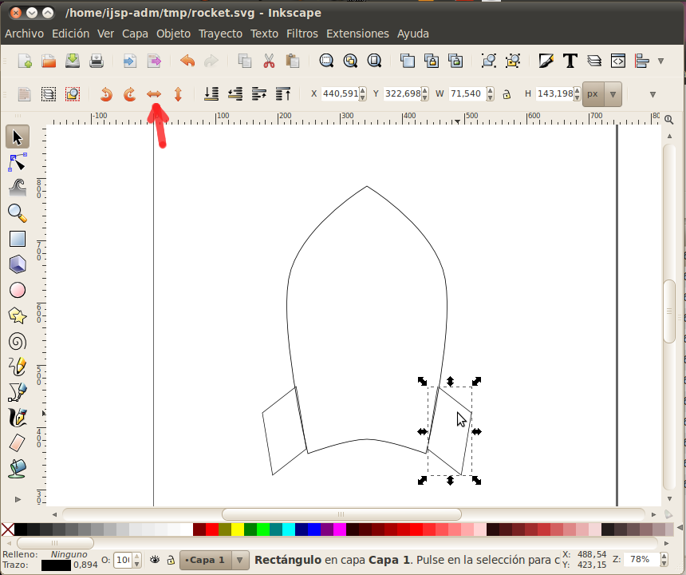
La tercera ala del cohete es otro rectángulo estrecho, de la misma
altura que las otras alas (técnicamente, deberíamos tener dos
rectángulos, uno para cada esquina, pero por ahora usaremos sólo uno
para simplicidad). Para centrar la nueva ala al cuerpo del
cohete, selecciona tanto el ala como el cohete, y usa el comando de
Alinear y Distribuir para alinear el ala horizontalmente con relación
al objeto de mayor tamaño en la imagen (el cuerpo del cohete).
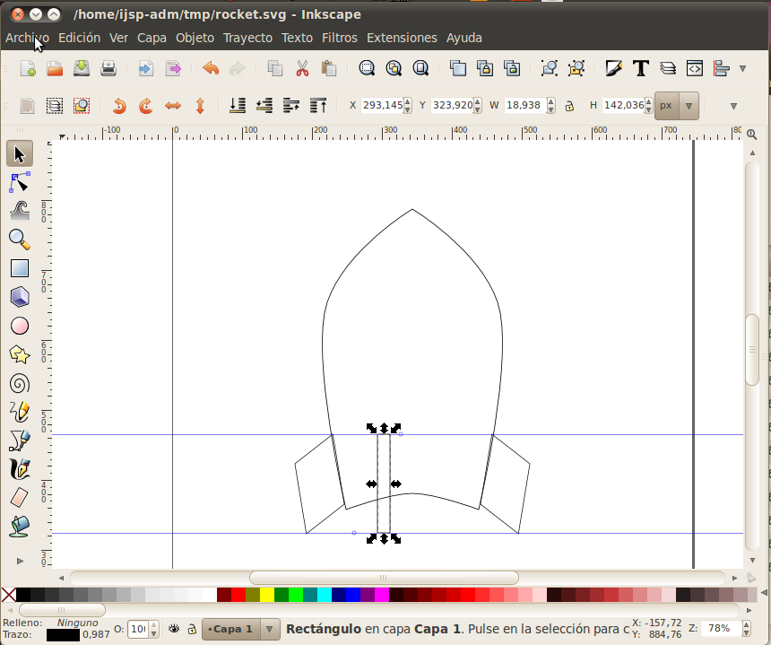
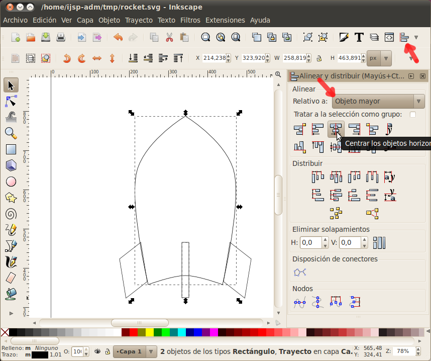
Ahora, sabes qué se necesita para un cohete divertido? Una
ventana, para que los astronautas dentro del cohete puedan mirar el
espacio. Comienza dibujando un círculo, que será el marco de la
ventana. (Creo que estoy aburriendo con mencionar esto tanto, pero
mantén la tecla Ctrl presionada, para que lo que dibujes sea un círculo
perfecto y no una elipse).

Selecciona el círculo y el cuerpo del cohete, y alínealo verticalmente al centro del cuerpo.

Un círculo más pequeño va a servir como la ventana propiamente.
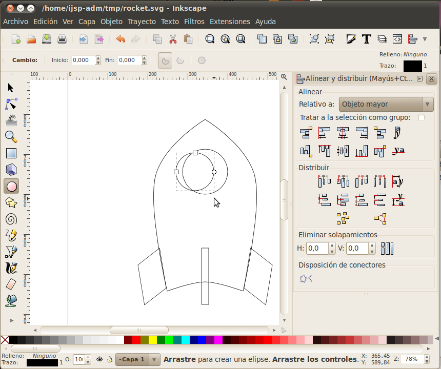
Selecciona los dos círculos y alínealos horizontal y verticalmente.
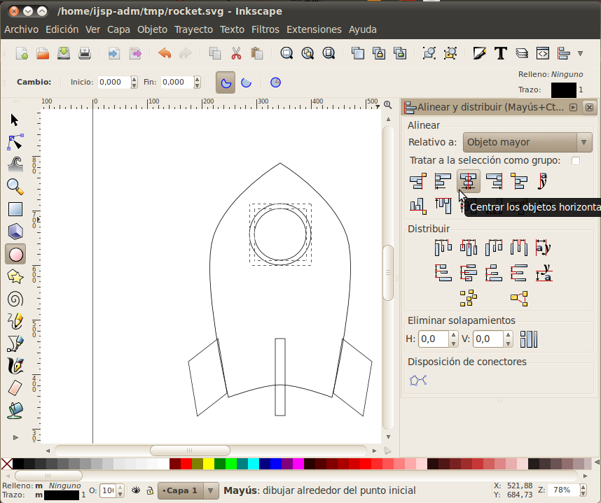
Ahora añade color a los objetos, ya sea usando la paleta de colores
en el cuadro inferior de la pantalla, o el botón de Relleno y Borde en
la barra de herramientas, o cualquier otra de las muchas formas
posibles de colorear (hay bastantes). Un cohete es generalmente algo
plateado, así que usa tonos grises.

De vuelta a nuestro cohete, ahora hagámoslo volar. Usa la
herramienta Bezier (lápiz) y dibuja libremente varias puntas en la
parte inferior del cohete, que formarán la llama de propulsión.

Colorea la llama de color rojo o un color naranja rojizo y colócalo en el fondo, debajo del cuerpo del cohete.

El centro de la llama se supone que sea más caliente, así que dibujaremos otra serie de puntas de color amarillo.
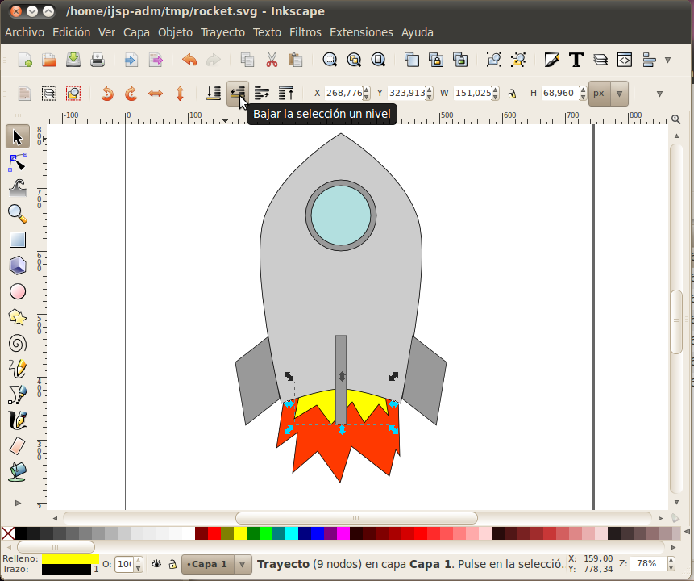
Opcionalmente, si queremos que el cohete esté ya volando en vez de despegando, selecciona toda la imagen y rótala un poco.
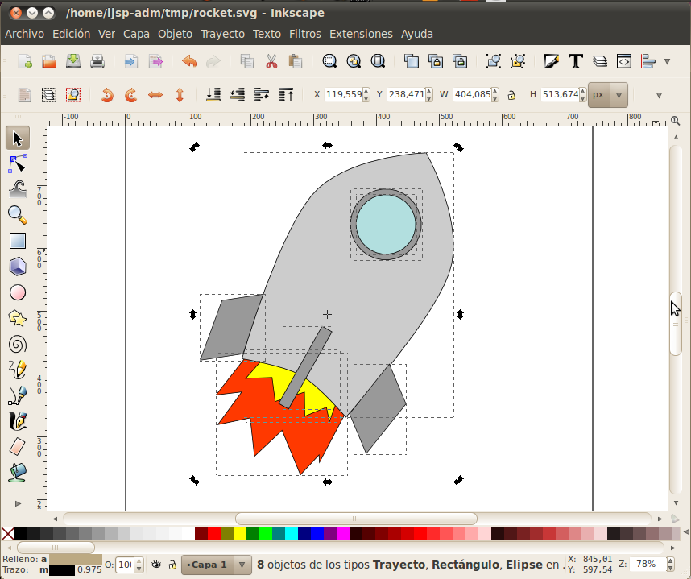
Bonitificación
Un poco de embellecimiento no hiere a nadie, así que ahora vamos a
hacer que el cohete se vea un poco más realista (si se le puede llamar
a esto "realista") y menos caricaturezco. Remueve los brochazos
de pincel y usa gradientes plateados para todas las superficies
metálicas -- haz esto usando el editor de degrado, arrastrando y
editando los colores.
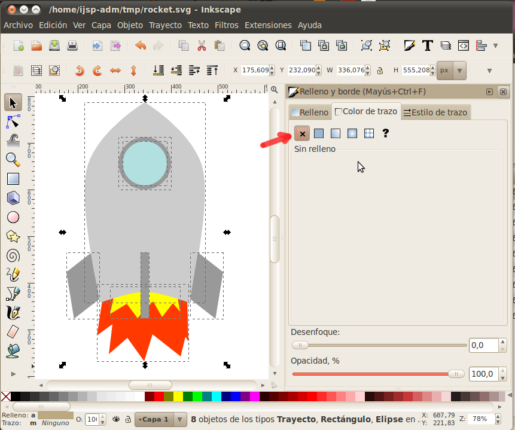
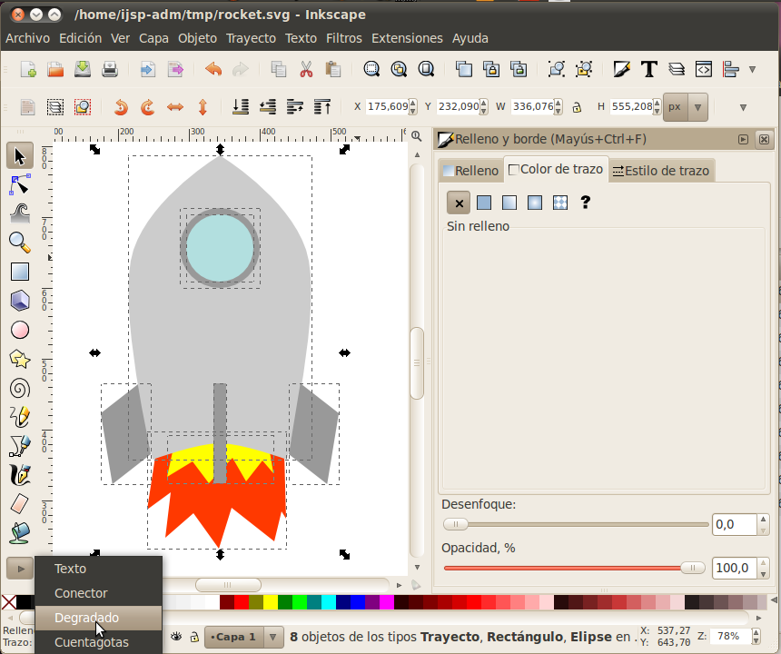
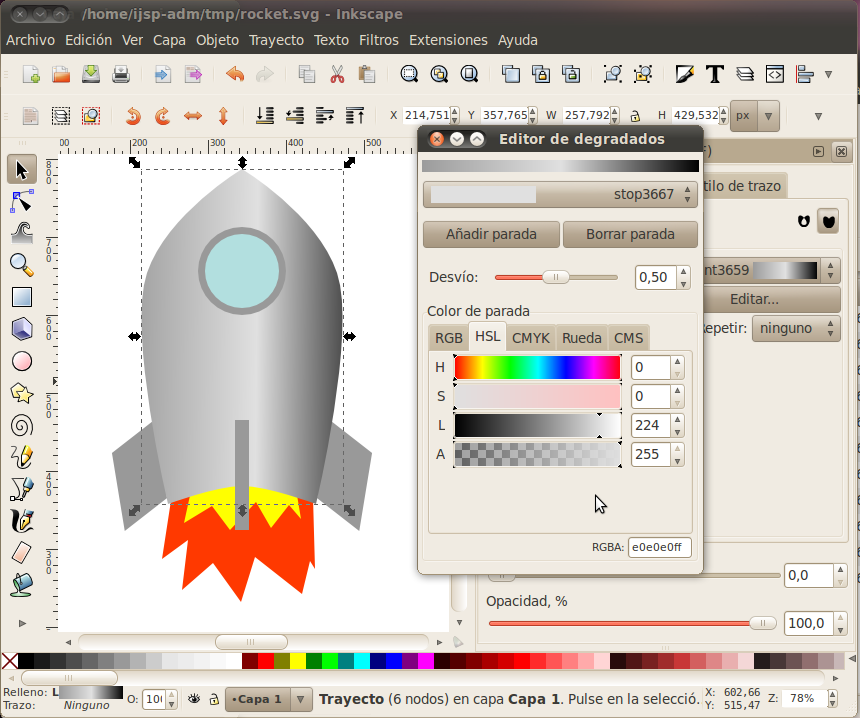
Llena todo con gradientes, incluyendo las llamas y la ventana.
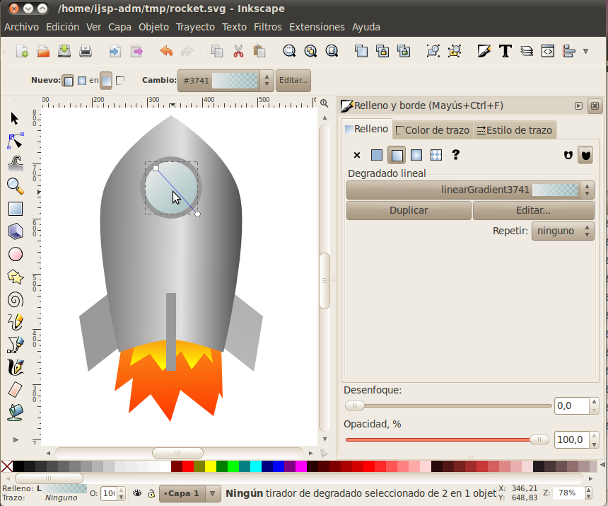
Selecciona la llama interna (la amarilla) y usa la opción de
Relleno y borde para desenfocar la llama un poco para un efecto más
realista (y más bonito).

Desenfoca también la llama roja/anaranjada. Y eso es básicamente todo lo que haremos aquí.

Ahora nuestro cohete puede despegar y volar con orgullo. Al infinito y más alla!
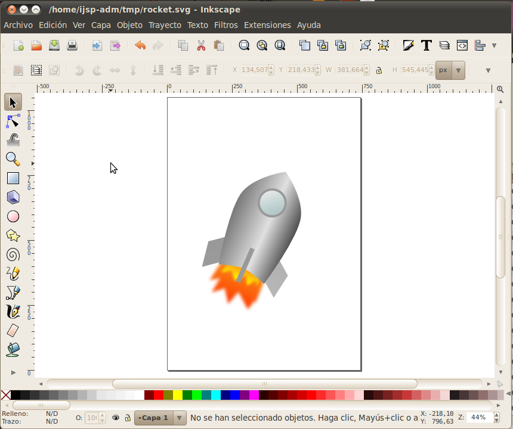
Felicidades, hemos terminado un ejercicio bastante avanzado de principio a fin!